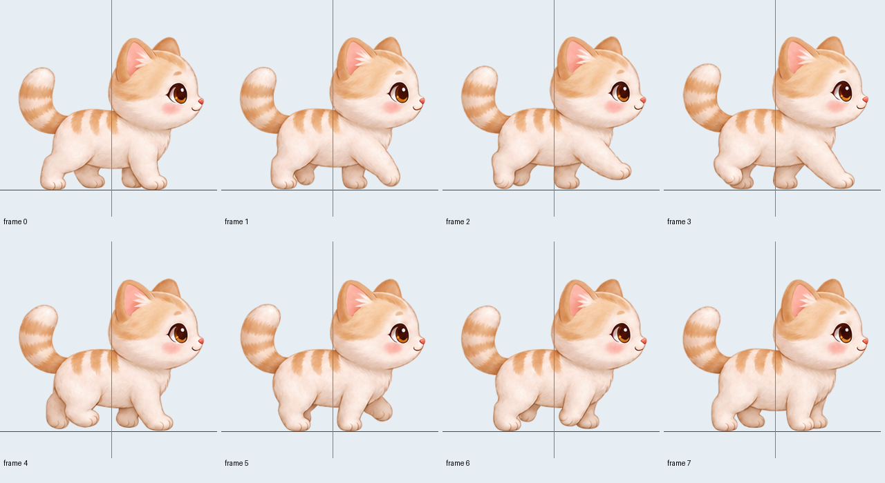

정지 때 정면 자세가 끼는 오류는 수정했습니다. 이미지 도구로 128셀 후보를 생성했지만 완성된 보행 주기로 승인한 추가 원화는 0장입니다. 아래 원화 영상은 미승인 후보를 검토하는 자료이며 제품의 개선 완료 보행이 아닙니다.
위: v2.0.16 진단의 정지 대기 누락 재현. 아래: 실제 앱과 같은 정지 진입·안정 대기·동작 시간·표시 선택. 양쪽 모두 기존 8장 원화, 동일한 64px 보폭과 시나리오입니다.
Windows GDI+ 진단 출력 20FPS, Box2D 60Hz. 활동 중 앱 화면 갱신 목표 약60FPS. 바탕화면 녹화는 아닙니다.
위: 기존 8장. 아래: 생성 후보. 표시 높이는 공통110논리px, 영상60FPS입니다. 동일한 64px·약2.91초 주기에 넣어 문제를 관찰한 비교입니다. 후보의 균등 비중은 검수용 가정이며 접지 보정값으로 승인하지 않았습니다. Pillow로 합성한 정속 리뷰이고 Windows GDI+나 실제 바탕화면 녹화가 아닙니다.
48셀 후보 — 발 궤적·접지 높이 검수 불합격
64셀 후보 — 얼굴 위치는 개선됐지만 네 발의 접지·반복 연결 검수 불합격

추가16셀 접지 연구의 후반에는 실제 중간 다리 형태가 생겼지만 원본4→5의 양끝과 연결되지 않고 최대5.17논리px 간격이 남았습니다. 완성 원화로 등록하지 않았습니다.
상세 결과 · 중간 자세 명세 · 원본 주석 템플릿 · 생성·승인 수 기록